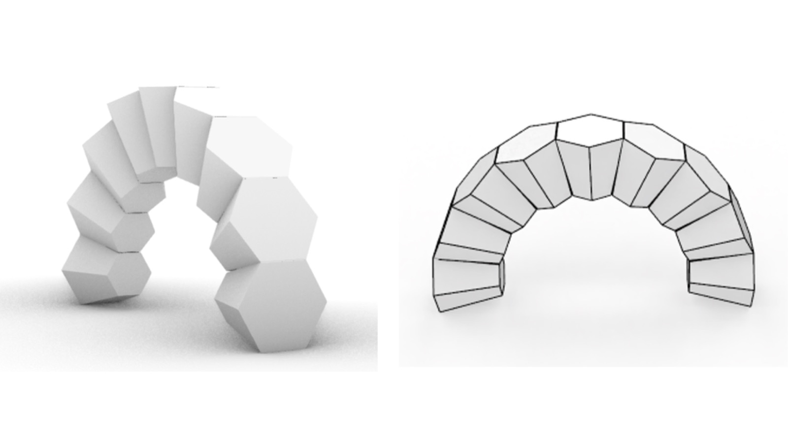

Project
Parametrische overspanning
Een boog van veelhoekige blokken, parametrisch ontworpen in Grasshopper als ontwerp voor het project digitale fabricage met de kleiprinter.

De opgave
Voor het project digitale fabricage ontwierp ik een overspanning die uit losse blokken bestaat en met de kleiprinter gemaakt kan worden. Een papieren model van een boog van veelhoekige blokken was mijn referentie.
Het proces
In Grasshopper bouwde ik een script met parameters voor onder andere de overspanning, de boogvorm, het aantal blokken, de dikte en de straal. Door de parameters te veranderen ontstonden verschillende varianten, van een slanke boog tot een boog van grote, losse blokken. Daarna maakte ik renders van het ontwerp.
- Een papieren model van een boog van blokken als referentie kiezen
- Een Grasshopper-script bouwen met parameters voor overspanning, vorm, aantal, dikte en straal
- Varianten maken door de parameters aan te passen
- Het ontwerp renderen en met de groep vergelijken
Het resultaat
De groep koos uiteindelijk voor een ander ontwerp, omdat mijn boog lastiger te printen was. Een groepsgenoot merkte ook op dat mijn parameters niet helemaal correct waren. Ik heb geleerd dat een ontwerp niet alleen mooi moet zijn, maar ook uitvoerbaar.